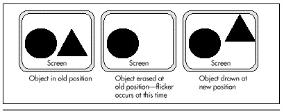
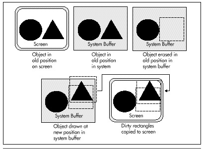

| Previous | Table of Contents | Next |
Of course, VGA display memory has its own performance problems. The fastest ISA bus VGA can, at best, support sustained write times of about 10 cycles per word-sized write on a 486/33; 15 or 20 cycles is more common, even for relatively fast SuperVGAs; the worst case I’ve seen is 65 cycles per byte. However, intermittent writes, mixed with a lot of register and cache-only code, can effectively execute in one cycle, thanks to the caching design of many VGAs and the 486’s 4-deep write buffer, which stores pending writes while the CPU continues executing instructions. Display memory reads tend to take longer, because coprocessing isn’t possible—one microsecond is a reasonable rule of thumb for VGA reads, although there’s considerable variation. So VGA memory tends not to be as bad as VGA I/O, but lord knows it isn’t good.
|
|
|||
| OUT Time in Microseconds and Cycles | |||
|---|---|---|---|
| OUT Instruction | Official Time | 486 #1/16-bit VGA #1 | 486 #2/16-bit VGA #2 |
|
|
|||
| OUT DX,AL | |||
| repeated 1,000 times nonstop (maximum byte access) |
0.300 s 10 cycles |
2.546 s 84 cycles |
0.813 s 27 cycles |
| OUT DX,AX | |||
| repeated 1,000 times nonstop (maximum word access) |
0.300 s 10 cycles |
3.820 s 126 cycles |
1.066 s 35 cycles |
| OUT DX,AL | |||
| repeated 1,000 times, but interspersed with MULs (random byte access) |
0.300 s 10 cycles |
1.610 s 53 cycles |
0.780 s 26 cycles |
| OUT DX,AX | |||
| repeated 1,000 times, but interspersed with MULs (random word access) |
0.300 s 10 cycles |
2.830 s 93 cycles |
1.010 s 33 cycles |
| Table 45.1 Results of I/O performance tests run under the Phar Lap386|DOS-Extender. | |||
|
|
|||
|
OUTs, in general, are lousy on the 486 (and to think they only took three cycles on the 286!). OUTs to VGAs are particularly lousy. Display memory performance is pretty poor, especially for reads. The conclusions are obvious, I would hope. Structure your graphics code, and, in general, all 486 code, to avoid OUTs. |
For graphics, this especially means using write mode 3 rather than the bit-mask register. When you must use the bit mask, arrange drawing so that you can set the bit mask once, then do a lot of drawing with that mask. For example, draw a whole edge at once, then the middle, then the other edge, rather than setting the bit mask several times on each scan line to draw the edge and middle bytes together. Don’t read from display memory if you don’t have to. Write each pixel once and only once.
It is indeed a strange concept: The key to fast graphics is staying away from the graphics adapter as much as possible.
The relative slowness of VGA hardware is part of the appeal of the technique that I call “dirty-rectangle” animation, in which a complete copy of the contents of display memory is maintained in offscreen system (nondisplay) memory. All drawing is done to this system buffer. As offscreen drawing is done, a list is maintained of the bounding rectangles for the drawn-to areas; these are the dirty rectangles, “dirty” in the sense that that have been altered and no longer match the contents of the screen. After all drawing for a frame is completed, all the dirty rectangles for that frame are copied to the screen in a burst, and then the cycle of off-screen drawing begins again.
Why, exactly, would we want to go through all this complication, rather than simply drawing to the screen in the first place? The reason is visual quality. If we were to do all our drawing directly to the screen, there’d be a lot of flicker as objects were erased and then redrawn. Similarly, overlapped drawing done with the painter’s algorithm (in which farther objects are drawn first, so that nearer objects obscure them) would flicker as farther objects were visible for short periods. With dirty-rectangle animation, only the finished pixels for any given frame ever appear on the screen; intermediate results are never visible. Figure 45.1 illustrates the visual problems associated with drawing directly to the screen; Figure 45.2 shows how dirty-rectangle animation solves these problems.

Figure 45.1 Drawing directly to the screen.

Figure 45.2 Dirty rectangle animation.
Well, then, if we want good visual quality, why not use page flipping? For one thing, not all adapters and all modes support page flipping. The CGA and MCGA don’t, and neither do the VGA’s 640x480 16-color or 320x200 256-color modes, or many SuperVGA modes. In contrast, all adapters support dirty-rectangle animation. Another advantage of dirty-rectangle animation is that it’s generally faster. While it may seem strange that it would be faster to draw off-screen and then copy the result to the screen, that is often the case, because dirty-rectangle animation usually reduces the number of times the VGA’s hardware needs to be touched, especially in 256-color modes.
This reduction comes about because when dirty rectangles are erased, it’s done in system memory, not in display memory, and since most objects move a good deal less than their full width (that is, the new and old positions overlap), display memory is written to fewer times than with page flipping. (In 16-color modes, this is not necessarily the case, because of the parallelism obtained from the VGA’s planar hardware.) Also, read/modify/write operations are performed in fast system memory rather than slow display memory, so display memory rarely needs to be read. This is particularly good because display memory is generally even slower for reads than for writes.
| Previous | Table of Contents | Next |